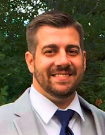

 I am
38
years old I live in Philadelphia, PA. I have been working in IT for close to 20 years. I
started off in a data center, moved over to a helpdesk and did some desktop support. I
moved on
to some front end
software support and now I am learning front end development to help develop the software
I've
been supporting for the
last 10 years.
In my free time I listen to music and attend concerts. I have been to well over 500 shows.
I
have
some some bands over 100 times each. I have travelled all over the US and even followed a
band
over to
Europe for 2 weeks. My favorite band is Phish, but I have seen Billy Joel, The Police, The
Gorillaz.
Music is a universal language that can bring people from all walks of life together for a
little while
with some common ground, to forget about life for a while and enjoy some music.